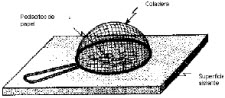

| Objetivo: |
| Reconocer las implicaciones de Michael de los trabajos de Faraday. Identificará el fenómeno del blindaje eléctrico a través de un experimento. Reconocerá el principio electrostático del blindaje eléctrico.
|
| Material |
|
|
| Introducción: |
Un blindaje es una superficie metálica dispuesta entre dos regiones del espacio que se utiliza para atenuar la propagación de los campos eléctricos, magnéticos y electromagnéticos. Entonces un blindaje sirve tanto para no dejar escapar los campos de la zona encerrada en el, como para evitar que en una zona protegida por el mismo entre campo alguno. La forma en que se presentan los blindajes son: cajas, armarios, juntas eléctricas, compartimentos internos, pinturas conductoras, láminas metálicas, diferentes tipos de depósitos conductores sobre plásticos, etc. |
| Desarrollo Experimental: |
|
Experimento 1:
Experimento 2:
|
| Resultados y Conclusiones: |
| ¿Por qué la coladera metálica no permite la interacción eléctrica? Justifica tu respuesta.
|
| Figura 1: Empuje Hidrostático |
|  |